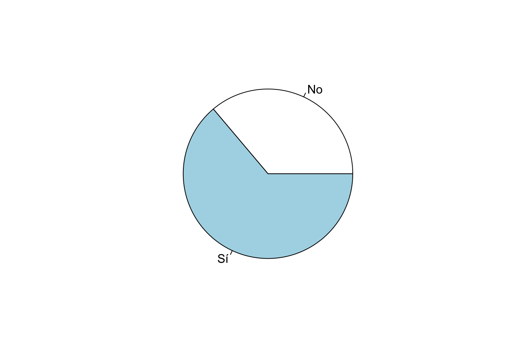
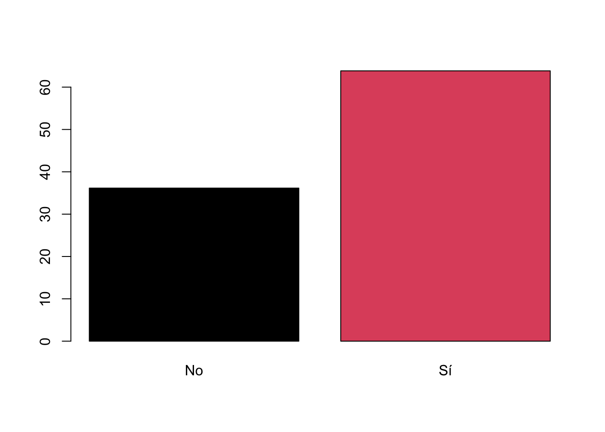
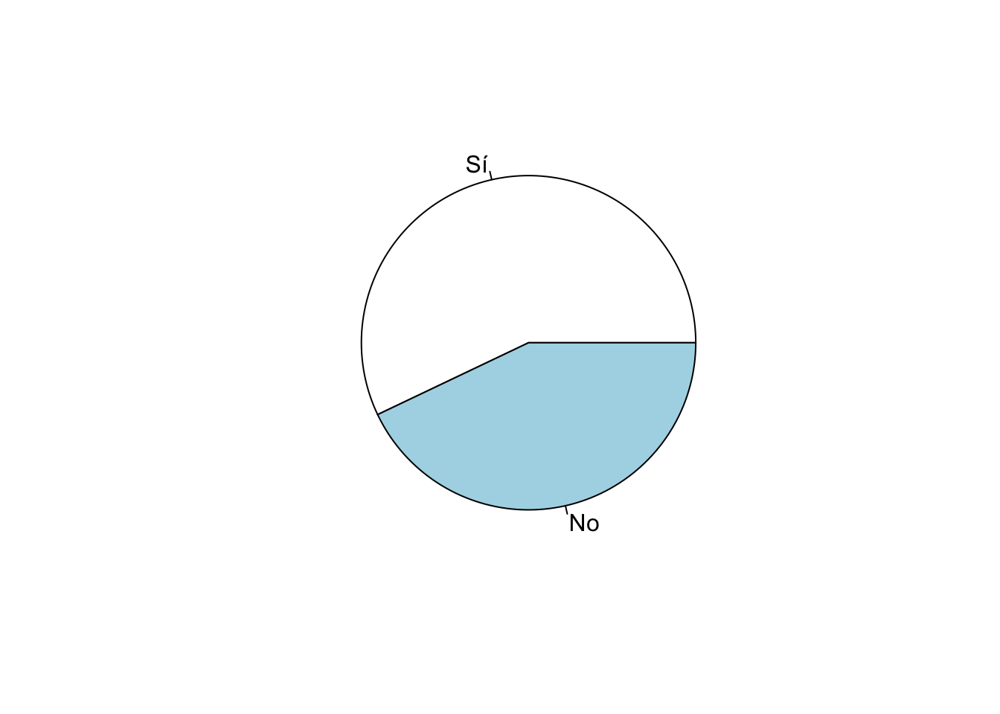

Introducción
En este documento empezaremos con los aspectos básicos de cómo usar
la base de datos del Barómetro de las Américas de LAPOP para fines
estadísticos. En primer lugar, veremos aspectos básicos de cómo
describir una variable mediante una tabla de distribución de frecuencias
y cómo graficar esa variable mediante gráficos circulares o de barras.
Para eso, vamos a usar los informes regionales “El pulso de la
democracia”, con los resultados de la ronda 2021, disponible aquí,
y con los resultados de la ronda 2018/19, disponible aquí.
Uno de los resultados más relevantes en la ronda 2021 presenta los
resultados sobre apoyo a la democracia en la región. Para la ronda
2018/19, una de las secciones de este informe, reporta los datos sobre
redes sociales y actitudes políticas. En esta sección, se presentan
datos sobre el uso de internet y el uso de redes sociales, en general y
por país. Con los datos del Barómetro de las Américas se puede saber el
porcentaje de hogares con acceso a celulares, con acceso a internet, así
como el porcentaje de personas que usa Whatsapp, Facebook o Twitter. En
este documento vamos a repasar estos resultados.
Sobre la base de datos
Los datos que vamos a usar deben citarse de la siguiente manera:
Fuente: Barómetro de las Américas por el Proyecto de Opinión Pública de
América Latina (LAPOP), wwww.LapopSurveys.org. En este documento se
carga nuevamente desde cero una base de datos recortada. Se recomienda
nuevamente limpiar el Environment de los objetos usados en módulos
anteriores.
Esta base de datos se encuentra alojada en el repositorio
“materials_edu” de la cuenta de LAPOP en GitHub. Mediante la librería
rio y el comando import se puede importar esta
base de datos desde este repositorio. Además, se seleccionan los datos
de países con códigos menores o iguales a 35, es decir, se eliminan las
observaciones de Estados Unidos y Canadá.
library(rio)
lapop18 = import("https://raw.github.com/lapop-central/materials_edu/main/LAPOP_AB_Merge_2018_v1.0.sav")
lapop18 = subset(lapop18, pais<=35)
También cargamos la base de datos de la ronda 2021.
lapop21 = import("https://raw.github.com/lapop-central/materials_edu/main/lapop21.RData")
lapop21 = subset(lapop21, pais<=35)
Apoyo a la democracia
En el reporte de El Pulso de la Democracia 2021 se presenta los
resultados del apoyo a la democracia por país. El gráfico 1.1 muestra el
porcentaje de personas en cada país que apoya a la democracia en
abstracto.

En los módulos anteriores se vio cómo recodificar la variable ING4,
medida originalmente en una escala del 1 al 7, donde 1 significa “muy en
desacuerdo” y 7 significa “muy de acuerdo”. Los valores entre 5 a 7 son
recodificados como “1”, que identifica a aquellos que apoyan a la
democracia. El resto se recodifica como “0”, aquellos que no apoyan a la
democracia. Esta recodificación se guarda en una nueva variable
“ing4rec”.
library(car)
lapop21$ing4rec = car::recode(lapop21$ing4, "1:4=0; 5:7=1")
En sentido estricto, esta variable no es numérica, a pesar que está
definida en la base de datos como “dbl”, que es un tipo de variable
numérica. Esta variable es de tipo cualitativo, nominal, que en R se
define como factor. Para tener correctamente definida y etiquetada esta
variable, se tiene que transformar. En primer lugar se define como
factor con el comando as.factor.
lapop21$ing4rec = as.factor(lapop21$ing4rec)
Una variable de tipo factor puede tener etiquetas por cada código
numérico. La definición de etiquetas tiene el objetivo que en cualquier
tabla o gráfico no aparezca el código numérico, sino la etiqueta
correspondiente. Esto se hace usando el comando levels.
Luego, esta variable se puede describir con el comando
table, que nos brinda las frecuencias absolutas por cada
categoría de la variable.
levels(lapop21$ing4rec) = c("No", "Sí")
table(lapop21$ing4rec)
##
## No Sí
## 20523 36240
Describir la variable
Como vimos en el módulo sobre Manejo de Datos, se puede usar el
comando prop.table para tener las frecuencias relativas y
el comando round para mostrar solo un decimal.
round(prop.table(table(lapop21$ing4rec))*100, 1)
##
## No Sí
## 36.2 63.8
Este gráfico muestra los resultados de las 2 categorías definidas de
la variable de apoyo a la democracia. Sin embargo, esta variable tiene
valores perdidos. Para poder tener una tabla con los valores perdidos,
se puede usar el comando table con la especificación
useNA = "always".
round(prop.table(table(lapop21$ing4rec, useNA = "always"))*100, 1)
##
## No Sí <NA>
## 33.8 59.7 6.4
En esta tabla se ve que existe un 6.4% de casos perdidos del total de
observaciones. La presentación de valores perdidos en tablas o gráficos
depende del investigador. Aquí vamos a presentar los gráficos sobre los
datos válidos.
Graficar la variable
Una variable de tipo “factor” se puede graficar de varias maneras.
Una posibilidad es tener un gráfico circular. Se puede usar el comando
pie que es parte de la sintaxis básica de R. Dentro de este
comando se puede anidar el comando table para graficar
estos valores.
pie(table(lapop21$ing4rec))

Este gráfico tiene algunas opciones de personalización. Por ejemplo,
la especificación labels=… sirve para incluir el número de
casos de cada sector y la especificación col=… sirve para
definir los colores de los sectores.
pie(table(lapop21$ing4rec), labels=table(lapop21$ing4rec), col=1:2)

Otra opción es usar un gráfico de barras. Usando los comandos básicos
de R, se puede usar el comando barplot.
barplot(prop.table(table(lapop21$ing4rec))*100, col=1:2)

Los comando de base de R tienen un nivel de personalización, pero
existe una librería especializada para hacer gráficos llamada
ggplot con más opciones gráficas. En esta serie de módulos
vamos a usar esta librería.
Por ejemplo, para reproducir un gráfico de barras de la variable de
apoyo a la democracia se llama a la librería ggplot2. Para
graficar los datos de una variable de tipo factor, tenemos dos opciones:
hacerlo desde la misma base de datos original o crear un nuevo objeto
que guarde los resultados en una tabla.
En este ejemplo partiremos de la segunda opción por ser más simple.
Lo primero que tenemos que hacer es guardar la tabla en un objeto, como
un dataframe. Para esto usamos el comando as.data.frame
donde anidamos el código para producir la tabla. Este comando crea dos
columna, “Var1” que guarda las etiquetas y “Freq” que guarda el valor de
los porcentajes.
tabla1 = as.data.frame(round(prop.table(table(lapop21$ing4rec))*100, 1))
tabla1
## Var1 Freq
## 1 No 36.2
## 2 Sí 63.8
Luego, tenemos que definir son los datos que se van a usar con la
especificación data=tabla1. Ojo, no usaremos la base de
datos original “lapop21”, sino la “tabla1” donde hemos guardado los
resultados.
El comando ggplot trabaja sumando capas. La
especificación aes sirve para definir la “estética” del
gráfico. Generalmente se usa para indicar qué variable se va a graficar
en qué eje (x o y). También se puede usar la especificación
fill= para definir los grupos que se van a generar. En este
caso, en el eje X queremos las categorías “Sí” y “No” y en el eje Y, los
datos de “Freq”.
Luego de especificar los datos y los ejes, se tiene que especificar
el tipo de gráfico que se quiere realizar. Esto se hace con las
geometrías (“geom_xxx”). Se define un gráfico de barras simple, usando
el comando geom_bar(...), donde internamente especificamos
stat="identity" para que este comando trabaje con los datos
tal cual están en la tabla. También se define el ancho de la barra con
la especificación width. Con la especificación
labs se define las etiquetas de ejes y el “caption”.
Finalmente, con la especificación coord_cartesian se define
los límites del eje Y de 0 a 80. Se debe notar que el gráfico no
presenta una columna para el porcentaje de valores perdidos. Presentar
esta columna es opción del investigador.
library(ggplot2)
ggplot(data=tabla1, aes(x=Var1, y=Freq))+
geom_bar(stat = "identity", width=0.5)+
labs(x="Apoyo a la democracia", y="Porcentaje",
caption="Barómetro de las Américas por LAPOP, 2021")+
coord_cartesian(ylim=c(0, 80))

Hasta aquí se ha presentado un gráfico de barras de la variable apoyo
a la democracia para toda la muestra, que incluye a todos los países. El
gráfico 1.1 muestra el porcentaje que apoya a la democracia por país.
Este tipo de gráfico se verá más adelante.
Usuarios de redes sociales
Ahora se usará un ejemplo del reporte El Pulso de la Democracia de la
ronda 2018/19. Se seguirá procedimientos similares a la sección anterior
y se replicarán algunos gráficos del mismo reporte de esa ronda. Las
variables con las que se trabajará son: SMEDIA1. ¿Tiene usted cuenta de
Facebook?; SMEDIA4. ¿Tiene usted cuenta de Twitter?; SMEDIA7. ¿Tiene
usted cuenta de Whatsapp?. Estas preguntas tienen como opciones de
respuesta:
Sí
No
Al momento de leer la base de datos en R, este programa importa las
variables como “num”, que la mayoría de funciones en R trata como
numéricas. Estas variables se tienen que convertir a variables de tipo
“factor” con el comando as.factor, pues son variables
categóricas. Esta nuevas variables las guardamos en el dataframe.
lapop18$smedia1r = as.factor(lapop18$smedia1)
lapop18$smedia4r = as.factor(lapop18$smedia4)
lapop18$smedia7r = as.factor(lapop18$smedia7)
Estas nuevas variables de tipo factor se tienen que etiquetar con el
comando levels. Se usa un vector con las etiquetas
concatenadas, usando el comando c().
levels(lapop18$smedia1r) = c("Sí", "No")
levels(lapop18$smedia4r) = c("Sí", "No")
levels(lapop18$smedia7r) = c("Sí", "No")
Calcular las variables de usuarios de redes sociales
Como vimos en un módulo anterior, se puede calcular nuevas variables
con valores condicionales de otras variables usando el comando
ifelse. De esta manera, se crea las variables de usuarios
de redes sociales.
lapop18$fb_user = ifelse(lapop18$smedia1==1 & lapop18$smedia2<=4, 1, 0)
lapop18$tw_user = ifelse(lapop18$smedia4==1 & lapop18$smedia5<=4, 1, 0)
lapop18$wa_user = ifelse(lapop18$smedia7==1 & lapop18$smedia8<=4, 1, 0)
Describir las variables
Con las variables listas, ahora procedemos a hacer las tablas
generales con el comando table. Se puede notar el uso de
# como forma de hacer anotaciones, que no son código en
R.
table(lapop18$smedia1r) #Facebook
##
## Sí No
## 15389 11573
table(lapop18$smedia4r) #Twitter
##
## Sí No
## 2363 24558
table(lapop18$smedia7r) #Whatsapp
##
## Sí No
## 17446 9569
Este comando table nos brinda las frecuencias absolutas
(número de observaciones) por cada categoría de las variables (en este
caso Sí y No). Para obtener las frecuencias relativas, usaremos el
comando prop.table, donde se anida el comando anterior
table.
prop.table(table(lapop18$smedia1r))
##
## Sí No
## 0.5707663 0.4292337
prop.table(table(lapop18$smedia4r))
##
## Sí No
## 0.08777534 0.91222466
prop.table(table(lapop18$smedia7r))
##
## Sí No
## 0.6457894 0.3542106
Sin embargo, el comando prop.table nos devuelve
demasiados decimales y las frecuencias relativas en una escala de 0 a 1.
Para redondear esta cifra usamos el comando round, que nos
permite especificar el número de decimales que se quiere mostrar. Tanto
el comando table, como prop.table se anidan
dentro de este nuevo comando. En este caso se ha usado 3 decimales, para
cuando se multiplique por 100, quede en forma de porcentaje con 1
decimal.
round(prop.table(table(lapop18$smedia1r)), 3)*100
##
## Sí No
## 57.1 42.9
round(prop.table(table(lapop18$smedia4r)), 3)*100
##
## Sí No
## 8.8 91.2
round(prop.table(table(lapop18$smedia7r)), 3)*100
##
## Sí No
## 64.6 35.4
No es práctico presentar 3 tablas cuando las variables tienen las
mismas categorías de respuesta. Para fines de presentación podría ser
mejor construir una sola tabla. Se puede guardar las tablas parciales en
nuevos objetos con el operador <- y luego unirlas como
filas con el comando rbind en un nuevo dataframe “tabla”,
de tal manera que las respuestas a cada red social aparezcan en
filas.
Facebook = round(prop.table(table(lapop18$smedia1r)), 3)*100
Twitter = round(prop.table(table(lapop18$smedia4r)), 3)*100
Whatsapp = round(prop.table(table(lapop18$smedia7r)), 3)*100
tabla2 = as.data.frame(rbind(Facebook, Twitter, Whatsapp))
tabla2
## Sí No
## Facebook 57.1 42.9
## Twitter 8.8 91.2
## Whatsapp 64.6 35.4
Para tener una mejor presentación de la tabla, se puede usar el
comando kable del paquete knitr, usando la
tabla construida anteriormente.
library(knitr)
knitr::kable(tabla2, format="markdown")
| Facebook |
57.1 |
42.9 |
| Twitter |
8.8 |
91.2 |
| Whatsapp |
64.6 |
35.4 |
Graficar las variables
En el Gráfico 3.1 del reporte se observa que se reportan estos datos
mediante un gráfico de sectores circulares.

Se puede reproducir ese gráfico usando el comando pie
que es parte de la sintaxis básica de R. Dentro de este comando se puede
anidar el comando table para graficar estos valores.
pie(table(lapop18$smedia1r))

También se podría pensar en un gráfico de barras. Usando los comandos
básicos de R, se puede usar el comando barplot.
barplot(prop.table(table(lapop18$smedia1r)))

Estos comandos gráficos tienen opciones para adecuar el gráfico, por
ejemplo, para incluir los porcentajes y adecuar las escalas.
Pero, como mencionamos más arriba, para tener más opciones gráficas,
usaremos el paquete ggplot para reproducir el gráfico
circular y a lo largo de estos módulos.
Lo primero que tenemos que hacer es crear una tabla que guarde los
datos que queremos graficar sobre los usuarios de Facebook. Recordemos
que tenemos una tabla con estos resultados donde la primera fila muestra
las etiquetas “Sí” y “No” y la segunda fila los porcentajes. Requerimos
que las etiquetas estén como columnas y los porcentajes también. Para
esto tenemos que transponer la tabla, que significa “darle la vuelta”.
Luego, esta nueva tabla la guardamos como un dataframe con el comando
as.data.frame que crea tres columnas “Var1” (sin interés),
“Var2” con las etiquetas y Freq con los porcentajes.
Face = as.data.frame(t(Facebook))
Face
## Var1 Var2 Freq
## 1 A Sí 57.1
## 2 A No 42.9
Con esta tabla podemos crear un gráfico de barras como el visto más
arriba. Otro tipo de barras que se usa frecuentemente es del tipo de
barras apiladas al 100%.
Vamos a crear una barra apilada con estos resultados. A diferencia
del gráfico de barras convencional, las barras apiladas requieren que en
la aes(x="", y=Freq, fill=Var2). Es decir, que no haya
etiquetas en el eje X, que el eje Y muestre los porcentajes (guardados
en “Freq”) y que la barra esté separada por las categorías (guardadas en
“Var2”).
Se agrega una capa de texto, con la especificación
geom_text. Dentro de esta especificación se determina una
“estética” con la etiqueta del dato aes(label=...), donde
se junta con el comando paste el dato del porcentaje “per”
y el símbolo “%”, con un espacio (sep=...) entre ellos. Se
establece el color de la fuente con color="...". Se ajusta
a blanco para que contraste con los colores del gráfico circular. Con el
comando hjust=... se ajusta la posición horizontal de este
texto. El comando ggplot puede incluir varios “temas” para
el gráfico. En este caso se ha usado theme_void() que
indica un fondo vacío. Finalmente, con la especificación
scale_fill_discrete(name=...) se puede cambiar el título de
la leyenda para que no aparezca el nombre de la variable, sino una
etiqueta más adecuada.
ggplot(data=Face, aes(x="", y=Freq, fill=Var2))+
geom_bar(width=1, stat="identity")+
geom_text(aes(label=paste(Freq, "%", sep="")), color="white",
position=position_stack(vjust=0.5), size=3)+
theme_void()+
scale_fill_discrete(name="¿Usa Facebook?")

Para crear un gráfico circular, no existe una “geometría” en
ggplot. Sin embargo, para genera el gráfico circular, se
tiene que agregar otro capa coord_polar, que transforma la
barra a coordenadas polares, creando un gráfico circular. Todo el resto
del código es similar al anterior.
ggplot(data=Face, aes(x="", y=Freq, fill=Var2))+
geom_bar(width=1, stat="identity")+
geom_text(aes(label=paste(Freq, "%", sep="")), color="white",
position=position_stack(vjust=0.5), size=3)+
coord_polar("y")+
theme_void()+
scale_fill_discrete(name="¿Usa Facebook?")

Si quisiéramos regresar a hacer un gráfico de barras, podemos incluir
el texto de los valores con geom_text, el título general
del gráfico con title dentro de labs, los
nombres de los ejes y el “caption”.
ggplot(Face, aes(x=Var2, y=Freq))+
geom_bar(stat="identity", width=0.5)+
geom_text(aes(label=paste(Freq, "%", sep="")), color="black", vjust=-0.5)+
labs(title="¿Qué tan frecuente se usan las redes sociales?",
x="Usuario de Facebook", y="Porcentaje",
caption="Barómetro de las Américas por LAPOP, 2018/19")+
coord_cartesian(ylim=c(0, 60))

Resumen
En este documento se ha trabajado con variables categóricas
nominales, como apoyo a la democracia o si usa o no usa redes sociales.
Se ha presentando las formas de cómo describir en tablas de frecuencia y
cómo graficar estas variables, mediante gráficos circulares o de
barras.
Cálculos incluyendo el efecto de diseño
Estos últimos resultados de la ronda 2018/19 no son exactamente
iguales a los del reporte pues LAPOP incluye el efecto del diseño
muestral en sus cálculos. Según esta sintaxis, se encuentra que el 57.1%
de entrevistados reporta ser usuario de Facebook, cuando en el reporte
aparece 56.2%. Lo mismo con Twitter, que aquí se calcula en 8.8% y en el
reporte 7.9%; y con Whatsapp que aquí aparece con 64.6% y en el reporte
con 64.4%. Como se indicó en el documento sobre el uso de los factores
de expansión usando los datos del Barómetro de las Américas (disponible
aquí),
hay varias maneras de reproducir los resultados incorporando el efecto
de diseño. Una primera opción es usar el comando freq que
permite la inclusión de una variable de factor de expansión, como
“weight1500”. Se incluye la especificación plot=F para no
producir los gráficos de barras.
library(descr)
descr::freq(lapop18$fb_user, lapop18$weight1500, plot = F)
## lapop18$fb_user
## Frequency Percent Valid Percent
## 0 11337 41.988 43.77
## 1 14564 53.939 56.23
## NA's 1100 4.073
## Total 27000 100.000 100.00
descr::freq(lapop18$tw_user, lapop18$weight1500, plot = F)
## lapop18$tw_user
## Frequency Percent Valid Percent
## 0 23819 88.220 92.023
## 1 2065 7.647 7.977
## NA's 1116 4.133
## Total 27000 100.000 100.000
descr::freq(lapop18$wa_user, lapop18$weight1500, plot = F)
## lapop18$wa_user
## Frequency Percent Valid Percent
## 0 9252 34.266 35.63
## 1 16714 61.903 64.37
## NA's 1035 3.832
## Total 27000 100.000 100.00
Sin considerar el efecto de diseño, se tiene que 57.1% de
entrevistados cuenta con una cuenta de Facebook. Este porcentaje varía a
55.2% si se incluye la variable de expansión, que es el valor que se
muestra en el reporte. Estos resultados ponderados también se pueden
guardar en objetos y luego graficar de la misma manera que se ha hecho
con los resultados sin ponderar.
Para el caso de Facebook, la tabla se puede guardar como un
dataframe, usando el comando as.data.frame. Esta tabla
incluye datos que no requerimos, como la fila de NA´s y del total y como
la columna de Percent. Estas filas y esta columna se borran usando la
especificación [-c(3,4), -2].
Luego, se le cambia el nombre a las columnas para evitar el nombre
“Valid Percent”. Se las nombre simplemente como “freq” y “per”. Esta
columna “per” es la que tiene los datos que graficaremos. Finalmente, se
añade una columna “lab” con las etiquetas de cada fila de
resultados.
fb = as.data.frame(descr::freq(lapop18$fb_user, lapop18$weight1500,
plot = F))
fb = fb[-c(3,4), -2]
colnames(fb) = c("freq", "per")
fb$lab = c("No", "Sí")
fb
## freq per lab
## 0 11336.69 43.77052 No
## 1 14563.60 56.22948 Sí
Con este nuevo dataframe podemos replicar los mismo códigos usados
más arriba para hacer un gráfico de barras o un gráfico circular. El
siguiente código muestra el gráfico de barras. Nótese que ahora se usa
el dataframe “fb” y que en aes se especifica que en el eje X deben estar
los datos de la columna “lab” y en el eje Y los datos de la columna
“per”.
ggplot(data=fb, aes(x=lab, y=per))+
geom_bar(stat="identity", width=0.5)+
geom_text(aes(label=paste(round(per, 1), "%", sep="")),
color="black", vjust=-0.5)+
labs(title="¿Qué tan frecuente se usan las redes sociales?",
x="Usuario de Facebook", y="Porcentaje",
caption="Barómetro de las Américas por LAPOP, 2018/19")+
coord_cartesian(ylim=c(0, 60))

Esto mismo se puede hacer para crear un gráfico circular. Este
gráfico reproduce los resultados hallados en el Gráfico 3.1 del
reporte.
ggplot(data=fb, aes(x=2, y=per, fill=lab))+
geom_bar(stat="identity")+
geom_text(aes(label=paste(round(per, 1), "%", sep="")), color="white",
position=position_stack(vjust=0.5), size=3)+
coord_polar("y")+
theme_void()+
labs(title="¿Qué tan frecuente se usan las redes sociales?",
caption="Barómetro de las Américas por LAPOP, 2018/19")+
scale_fill_discrete(name="¿Usa Facebook?")+
xlim(0.5, 2.5)

La segunda opción para reproducir los datos del reporte exactamente
es mediante el paquete survey. Como se indicó en esta sección,
primero se tiene que definir el diseño muestral con el comando
svydesign.
library(survey)
diseno18 = svydesign(ids = ~upm, strata = ~estratopri,
weights = ~weight1500, nest=TRUE, data=lapop18)
Una vez creado los datos con el factor de expansión en el objeto
“diseno18”, se puede usar los comandos nativos del paquete
survey para realizar cálculos. Por ejemplo, para calcular
la tabla de distribución de frecuencias se puede usar el comando
svytable.
svytable(~fb_user, design=diseno18)
## fb_user
## 0 1
## 11336.69 14563.60
Estas frecuencias se pueden anidar en el comando
prop.table para calcular los porcentajes de usuarios de
redes sociales. Estos resultados son iguales a los mostrados en los
gráficos anteriores y a los que aparecen en el reporte.
Estos datos también se pueden guardar en un dataframe que se adapta
para graficar, siguiendo el mismo procedimiento que en los gráficos
anteriores.
prop.table(svytable(~fb_user, design=diseno18))
## fb_user
## 0 1
## 0.4377052 0.5622948
prop.table(svytable(~tw_user, design=diseno18))
## tw_user
## 0 1
## 0.92023002 0.07976998
prop.table(svytable(~wa_user, design=diseno18))
## wa_user
## 0 1
## 0.3563091 0.6436909
